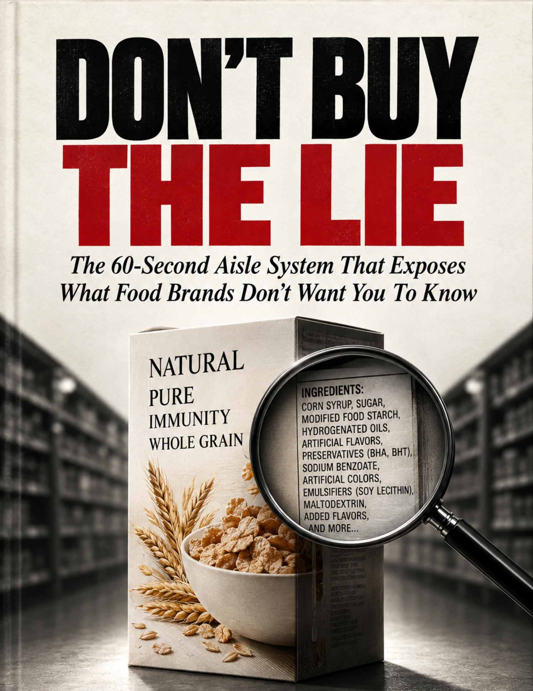

The 60-Second Aisle System That Exposes What Food Brands Don't Want You To Know
Nothing on the front of a package is there to inform you. Everything on the front is there to make you pick it up. Front-of-pack is a marketing surface, bought and designed by the brand, while the evidence sits on the back in tiny print they hope you never read. You are not bad at grocery shopping. You were out-designed. This field guide gives you the mechanical, 60-second system to cut through the marketing fog, protect your health, and fill your cart with what’s actually real.

You do not need to memorize a 400-page encyclopedia of chemistry terms. When any front-of-pack buzzword tries to do the thinking for you, run these three simple questions:
Words like "Natural", "Clean", "Farm Fresh", and "Immune Support" carry zero legal enforcement in food categories. Arsenic is natural. "Clean" can be 40% sugar. If a word is an unregulated vibe, it is decoration, not data.
Serving size is a fiction the brand manufactures to shrink scary numbers. A single-serve bottled drink often claims 3 servings so its 36 grams of sugar looks like 12. Always multiply by the amount a real human being actually consumes.
If a brand shouts "Honey" or "Whole Grain" on the front, check the top three ingredients on the back. If it's not in the first three, it's not the product — it's an accessory. Honest quality comes with verified paperwork, not cartoon drawings.
Every investigation we publish on Brands Truth comes back to the same handful of moves. Learn these six and you will see through grocery packaging in under sixty seconds.
A single word on the front changes what you assume about everything on the back. "Organic" makes you assume low sugar. "Plant-based" makes you assume healthy. "Gluten-free" makes you assume pure. Gluten-free crisps are still crisps, and organic candy is still candy.
Sugar, sodium and calories are reported per serving — and the manufacturer chooses the serving. A frozen meal for one is labelled as two servings so sodium looks half as bad as the tray you eat. A juice bottle claims 12g sugar, but the whole bottle holds 36g.
Sugar appears under seven different names (cane syrup, dextrose, maltodextrin, invert sugar, fruit juice concentrate) so no single one leads the list. Sodium and industrial seed fats get split the exact same way. Technically legal; engineered to mislead.
The "premium" version rarely costs more to make. It costs more to position: kraft cardboard, an artisanal font, a peaceful sketch of a farm. You are paying for the label, not the food. The expensive jar and cheap jar often have identical first three ingredients.
In supplements, the danger is absence. Tablets that fail disintegration checks and pass through the body intact; gummies whose vitamins degrade on the shelf; "herbal" pills with zero herb; and cheap magnesium oxide used while charging premium prices.
Companies know shoppers have short memories. The same conglomerate sells you the same formulation under a new "natural" sub-brand, or a tainted brand returns with friendlier colors while the settlement, recall, or failed lab test scrolls out of the news cycle.
Standing in the aisle with a cart in one hand and your phone in the other? Here is the exact mechanical framework you run on any product before you place it in your basket:
Bait Detection. Find the loudest claim ("Immunity", "High Protein", "Whole Grain"). Ask the inversion question: "What would this have to be for that claim to be technically true but completely meaningless?" Scan for hedges like "supports" or "-style". Label it: Claim product or Food product.
Where the Money Is. Read the first three ingredients (ordered by weight, heaviest first). Count aliases for sugar, salt, and fats. Anchor the serving size with multiplication. Then read only four numbers: Added Sugar, Sodium, Fibre, and Protein.
The Final Filter. Check what is there that shouldn't be (partially hydrogenated oils, palm kernel oil, HFCS, Red 40, Yellow 5/6, BHA/BHT, titanium dioxide) and what is missing (hero ingredient %, certifications). End with one verdict: BUY, BUY IF, or SWAP.
Designed specifically for real shoppers aged 50+ — clear, readable, zero technical jargon, and built to make your supermarket trips faster, healthier, and hundreds of dollars cheaper.
Why packaging is an engineered persuasion surface. The six universal corporate tricks, and the honest dictionary of words that mean nothing ("Natural", "Clean", "Farm Fresh", "Immunity", "Pure").
Pass One (5s on the front bait), Pass Two (20s on back panel ingredients, aliases, serving math, and the 4 critical numbers), and Pass Three (35s red flag sweep and reverse check).
Supplements: Form vs name (magnesium oxide vs glycinate), filler order, and third-party testing. Coffee: Roast date vs stale "best before". Bread: The whole-grain illusion, fibre receipts, and hidden sodium loads.
Pantry: Adulterated honey syrups, cold-pressed olive oils, and canned sodium. Cold Case: Yoghurt sugar bombs and cheese foods. Freezer: Ice cream air vs cream, and menu photo traps.
Why static brand lists fail (companies reformulate constantly). The third-party paperwork that never lies (NSF, USP, USDA Organic, Non-GMO). The 15-Minute Cart Reset that fixes your kitchen without budget shock or guilt.
The entire book compressed into a single high-resolution printable cheat sheet. Fits in your wallet, your phone photos, or on your refrigerator door. Includes the full checks table, red flag additives, and the 3 eternal questions.
Good marketing sells you a comforting story so you don't spend your attention. Here is what actually happens when you flip the box over in six common supermarket aisles:
| Grocery Aisle Item | The Front-Of-Pack Story | The Back-Of-Pack Reality | The 60-Second Brands Truth Check |
|---|---|---|---|
| Breakfast Cereal | "Heart Healthy, Whole Grain & Immunity" | Refined flour #1; corn syrup & sugar stacked; under 1g fibre per bowl | Check first ingredient for "whole" & verify fibre receipt (>3g/serving) |
| Daily Supplements | "High Potency Magnesium / Essential Daily" | Magnesium oxide (poorly absorbed cheap filler); gummies loaded with glucose syrup | Demand absorbable forms (glycinate/citrate) & third-party seal (USP/NSF) |
| Bakery Bread | "Artisan 12-Grain / Made With Whole Wheat" | Enriched bleached white flour leads; contains 5% whole grain and 380mg sodium/slice | Word "whole" must be in the 1st ingredient; multiply sodium across daily slices |
| Pantry Honey | "100% Pure Natural Clover Honey" | Adulterated with industrial rice/corn syrups; vague multi-country blend | Look for a single named origin, unfiltered/raw, and natural crystallisation |
| Olive Oil | "Pure & Light Imported Mediterranean Oil" | Refined solvent blend mixed with cheap seed oils; no harvest date; clear plastic | Must state "Extra Virgin", single origin, harvest date, in dark glass or tin |
| Frozen Dinner | "Wholesome Homestyle Dinner for One" | Labelled as 2 servings to mask 1,480mg sodium; sauces loaded with added sugars | Multiply serving stats by the whole tray — judge what a real human eats |
You do not fix a cart by becoming a completely different person overnight. You fix it by changing the products you stop rebuying, one category at a time. No waste, no guilt, no confrontation with your family.
Brands charge a 300% to 800% markup on food that is processed, boxed, and dressed up in mood claims. When you buy clean staples and genuine food, you strip out corporate profits, industrial additives, and sweetener stacks. This e-book pays for itself on your very first grocery receipt.
Download immediately on your smartphone, tablet, iPad, Kindle, or computer. Read it tonight and change how you shop tomorrow morning.
Direct from Brands Truth · Written for Real Supermarket Shoppers
Real feedback from subscribers of @BrandsTruth01 who stopped trusting front-of-pack promises and learned to read the back:
"The ingredient shuffling chapter was an eye-opener. I took my husband's 'healthy' breakfast cereal and found sugar listed under four different aliases! When I added them up, it was practically dessert. We switched to plain oats with cinnamon and saved $6 on that one item."
"I take blood pressure medication and try to watch sodium. Learning that commercial whole-grain sandwich bread is one of the largest hidden sodium bombs in the entire store shocked me. Doing the slice multiplication changed everything for my lunches."
"The supplement aisle section alone saved me $80 last month. I was buying expensive 'brain and heart' magnesium capsules that turned out to be cheap magnesium oxide with zero third-party certification. Now I only buy verified glycinate."
"The 1-Page Cheat Sheet on page 34 is printed and taped right on our refrigerator. When I go to Kroger or Costco, I have the 3 questions on my phone. Sixty seconds is really all it takes once you know what to look for."
"What I love about Brands Truth is that you don't preach or tell people to starve. You just teach how to read what's already printed on the back. Chapter 14 on the 15-Minute Cart Reset made it so easy to change our habits without fighting with the grandkids."
"Checked my honey in the pantry after reading Chapter 10. No named country of origin, just 'blend of international honey' — meaning adulterated syrup. Replaced it with single-source raw honey. Thank you for doing the hard investigative work!"
An independent, consumer-education channel dedicated to supermarket transparency. Every investigation we publish exists to run this system in public and show what happens when you read the back.
▶ Visit YouTube ChannelMost supermarket and nutrition advice on the internet is quietly subsidized by the very food conglomerates selling the products. Brands spend billions every year buying shelf placement, funding biased studies, and sponsoring social media influencers.
Brands Truth is 100% reader and viewer supported. A product appearing in our investigations or in this book is never a paid placement, never an affiliate kickback, and never sponsored. Our sole mission is to hand the power back to the shopper standing in the aisle with a package in their hands.
No fearmongering. No miracle cures. No brand witch-hunts. Just the clear, checkable mechanics of food packaging law — and the simple skills you need to feed yourself and your family with clarity and confidence.
Clear, direct answers about Don't Buy The Lie before you order:
Not at all. This book was written specifically to avoid technical overload. You do not need a degree in biochemistry. The entire 60-Second System relies on three simple questions, checking the first three ingredients, and doing simple fourth-grade arithmetic. It is designed for real shoppers standing in a busy supermarket aisle.
In fact, it almost always costs less. Corporate food profits come from taking cheap grains or vegetable oils, loading them with flavorings and starches, and packaging them in fancy boxes with a 400% markup. Chapter 14 shows you how replacing deceptive packaged items with genuine staples saves typical households $850 to $1,200+ each year.
No, and for a crucial reason: brand lists go stale quickly. Companies reformulate products, change ingredient suppliers, or get bought out every single month. If you memorize brand names, your knowledge expires in six months. This book teaches you the underlying system — a permanent skill you can use in any store, anywhere, for the rest of your life.
Immediately after your one-time payment of $46, you will receive an instant download link on your screen and via email. You receive a high-resolution, searchable 35-page PDF formatted with clear, senior-friendly large typography. It opens smoothly on iPhones, Android phones, iPads, tablets, Kindles, Macs, and Windows PCs. You also get the printable 1-page Brand Truth Cheat Sheet.
We want your purchase to be 100% risk-free. Download Don't Buy The Lie, read the 60-Second System, and take it into your next grocery trip. If you don't feel substantially more in control of what you buy and save real money on your groceries, simply reply to your receipt email within 7 days for a full, prompt, and courteous refund.
Nutritional consultations and wellness courses regularly cost $200 or more. We priced the master package at $46 — less than what the average shopper loses to deceptive packaging markups in two grocery trips — so that every consumer can own a permanent field manual that pays dividends for years to come.
The person standing next to you in the aisle is reading the exact same marketing claims. You don't have to be out-designed anymore. Walk to the back of the package and take your power back.
The cereal in your pantry and the supplements on your counter are already making claims. Download the complete 15-chapter e-book and printable Brand Truth Cheat Sheet for just $46 with our complete 7-day money-back guarantee.
Claim The E-Book & Cheat Sheet · $46